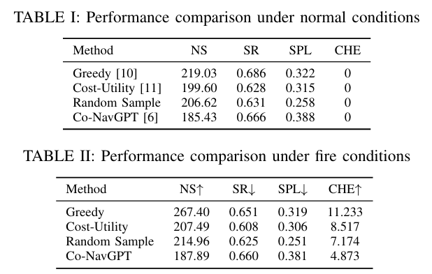

Multi-agent cooperative navigation in a simulated indoor fire environment with smoke, heat, and sensor degradation.
Indoor fire disasters pose severe challenges to autonomous search and rescue due to dense smoke, high temperatures, and dynamically evolving indoor environments. In such time-critical scenarios, multi-agent cooperative navigation is particularly useful, as it enables faster and broader exploration than single-agent approaches. However, existing multi-agent navigation systems are primarily vision-based and designed for benign indoor settings, leading to significant performance degradation under fire-driven dynamic conditions. In this paper, we present VULCAN, a multi-agent cooperative navigation framework based on multi-modal perception and vision–language models (VLMs), tailored for indoor fire disaster response. We extend the Habitat-Matterport3D benchmark by simulating physically realistic fire scenarios, including smoke diffusion, thermal hazards, and sensor degradation. We evaluate representative multi-agent cooperative navigation baselines under both normal and fire-driven environments. Our results reveal critical failure modes of existing methods in fire scenarios and underscore the necessity of robust perception and hazard-aware planning for reliable multi-agent search and rescue.
VULCAN is a hazard-aware multi-agent navigation framework that integrates multi-modal perception, vision–language reasoning, and cooperative planning to enable robust operation in indoor fire-disaster environments.

Fire-induced smoke severely degrades multi-modal perception in indoor environments. Using Gazebo-based fire simulations with a high-fidelity physics engine and particle-emitter support, we qualitatively demonstrate modality-dependent perception degradation under increasing smoke density.
RGB Camera
Depth Camera
Thermal Camera
Lidar Sensor
Modality-dependent perception degradation under increasing smoke density in simulated indoor fire environments.
We qualitatively compare multi-agent navigation behaviors under normal and fire-induced environments. The results highlight the impact of fire hazards on individual agent perception and cooperative route planning.
Agent 0 View (Normal Environment)
Agent 0 View (Fire Environment)
Agent 1 View (Normal Environment)
Agent 1 View (Fire Environment)
Cooperative Route Planning (Normal Environment)
Cooperative Route Planning (Fire Environment)
Compared to normal environments, fire-induced smoke and hazards significantly alter agent trajectories and coordination patterns, underscoring the necessity of hazard-aware cooperative planning.
We evaluate VULCAN in simulated indoor environments under both normal and fire-induced conditions, focusing on navigation effectiveness, robustness, and cooperative efficiency in the presence of severe perceptual degradation.

Metrics include success rate, path efficiency, and exploration coverage, averaged over multiple randomized episodes.